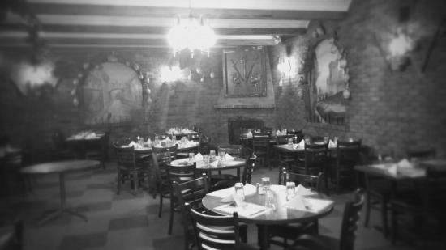
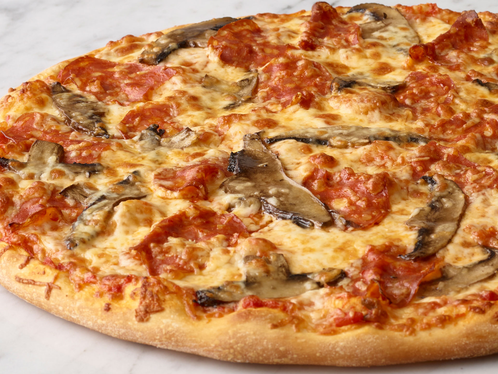
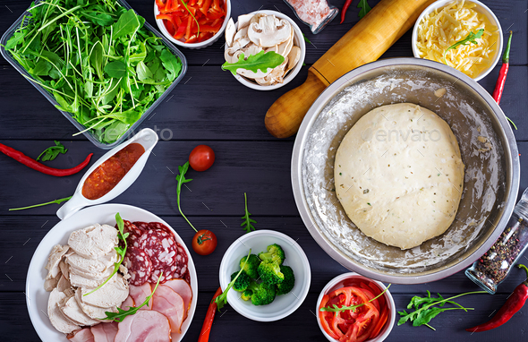
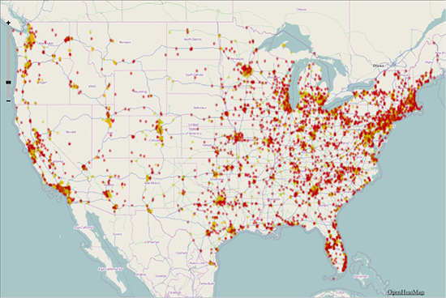

The History of Mr. Bolat's
A blast to the past and a look into the future.
The Beginning Where it all started
Our founder, Mr. Bolat, envisioned a chain of restaurants with food for everyone. Unsatisfied with other local and national offerings Mr. Bolat decided to start his own restaurant.
Award Winning Pizza
As an Italian immigrant Mr. Bolat had an Italian grandmother. With his grandmother's recipes Mr. Bolat's went on to win awards for their pizza.
Our Commitment to Quality
With the success of the restaurants Mr. Bolat wanted the best possible food for his loyal customers. When possible our food is made with organic, fair=trade, and local ingredients.
Maintaining Consistency
With the opening of new stores our goal became maintaining the quality that you would expect from our flagship location at all of our locations.
Our Future Expansion
Mr. Bolat's is expanding exponentially with our first international locations opening this year. With 15 more locations expected to open the following year.